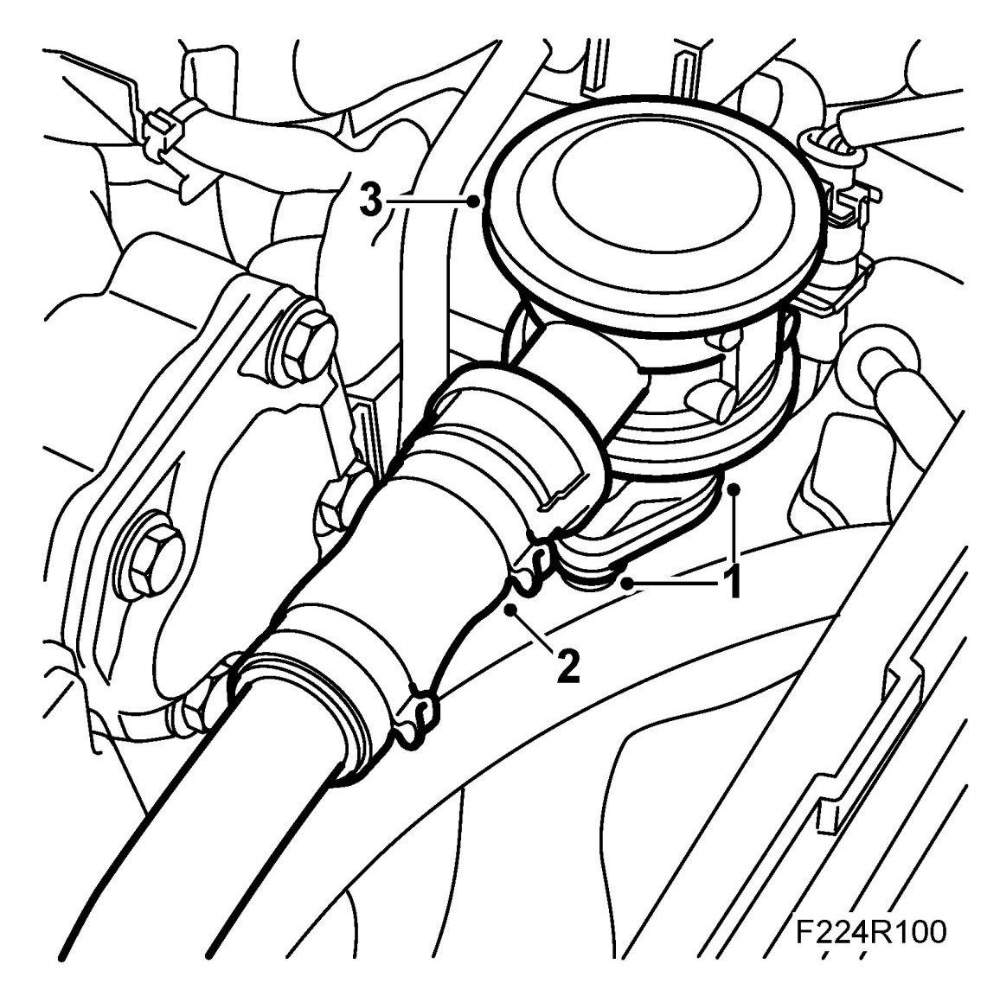
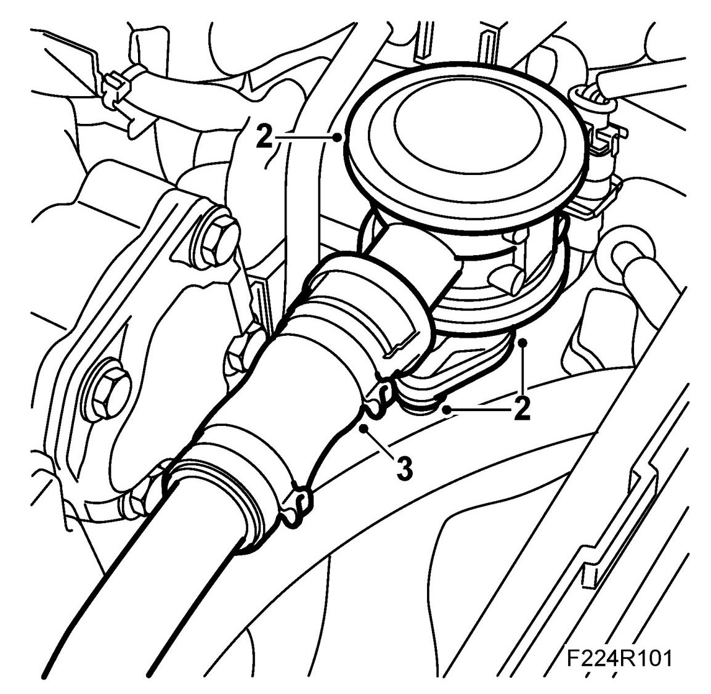

Air Injection Control Valve: Service and Repair
Valve, Secondary Air Injection
To remove
1. Remove the SAI valve screws.

2. Disconnect the SAI pipe quick-release coupling from the valve.
3. Remove the SAI valve.
To fit
1. Change the O-ring on the fast coupling.
2. Fit the SAI valve with a new gasket.
Tightening torque 10 Nm (7 lbf ft).

3. Connect the quick-release coupling to the SAI valve.